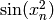
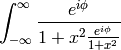

The documentation for Quantities is generated from ReStructured Text using the Sphinx documentation generation tool and the numpydoc Sphinx extension. Sphinx-0.6.3 or later is required. You can obtain Sphinx and numpydoc from the Python Package Index or by doing:
easy_install sphinx
The documentation sources are found in the doc/ directory in the trunk. The output produced by Sphinx can be configured by editing the conf.py file located in the doc/ directory. To build the users guide in html format, run from the main quantities directory:
python setup.py build_sphinx
and the html will be produced in build/sphinx/html. To build the pdf file:
python setup.py build_sphinx -b latex
cd build/sphinx/latex
make all-pdf
The actual ReStructured Text files are kept in doc. The main entry point is doc/index.rst, which pulls in the index.rst file for the user guide and the developers guide. The documentation suite is built as a single document in order to make the most effective use of cross referencing, we want to make navigating the Quantities documentation as easy as possible.
Additional files can be added to the various guides by including their base file name (the .rst extension is not necessary) in the table of contents. It is also possible to include other documents through the use of an include statement, such as:
.. include:: ../TODO
The Sphinx website contains plenty of documentation concerning ReST markup and working with Sphinx in general. Since quantities is so closely coupled with the numpy package, quantities will conform to numpy’s documentation standards and use numpy’s documentation tools. Please familiarize yourself with the docstring standard and the examples like these.
Here are a few additional things to keep in mind:
Please familiarize yourself with the Sphinx directives for inline markup. Quantities’ documentation makes heavy use of cross-referencing and other semantic markup. For example, when referring to external files, use the :file: directive.
Function arguments and keywords should be referred to using the emphasis role. This will keep Quantities’ documentation consistant with Python’s documentation:
Here is a description of *argument*
Please do not use the default role:
Please do not describe `argument` like this.
nor the literal role:
Please do not describe ``argument`` like this.
Sphinx does not support tables with column- or row-spanning cells for latex output. Such tables can not be used when documenting Quantities.
Mathematical expressions can be rendered as png images in html, and in the usual way by latex. For example:
:math:`\sin(x_n^2)` yields: , and:
.. math::
\int_{-\infty}^{\infty}\frac{e^{i\phi}}{1+x^2\frac{e^{i\phi}}{1+x^2}}
yields:

Footnotes [1] can be added using [#]_, followed later by:
.. rubric:: Footnotes
.. [#]
Footnotes
| [1] | For example. |
Use the note and warning directives, sparingly, to draw attention to important comments:
.. note::
Here is a note
yields:
Note
here is a note
also:
Warning
here is a warning
Use the deprecated directive when appropriate:
.. deprecated:: 0.98
This feature is obsolete, use something else.
yields:
Deprecated since version 0.98: This feature is obsolete, use something else.
Use the versionadded and versionchanged directives, which have similar syntax to the deprecated role:
.. versionadded:: 0.98
The transforms have been completely revamped.
New in version 0.98: The transforms have been completely revamped.
Use the seealso directive, for example:
.. seealso::
Using ReST :ref:`emacs-helpers`:
One example
A bit about :ref:`referring-to-quantities-docs`:
One more
yields:
See also
One example
One more
The autodoc extension will handle index entries for the API, but additional entries in the index need to be explicitly added.
In addition to the aforementioned formatting suggestions:
The top level doc dir has a folder called pyplots in which you should include any pyplot plotting scripts that you want to generate figures for the documentation. It is not necessary to explicitly save the figure in the script, this will be done automatically at build time to insure that the code that is included runs and produces the advertised figure. Several figures will be saved with the same basnename as the filename when the documentation is generated (low and high res PNGs, a PDF). Quantities includes a Sphinx extension (sphinxext/plot_directive.py) for generating the images from the python script and including either a png copy for html or a pdf for latex:
.. plot:: pyplot_simple.py
:include-source:
The :scale: directive rescales the image to some percentage of the original size, though we don’t recommend using this in most cases since it is probably better to choose the correct figure size and dpi in mpl and let it handle the scaling. :include-source: will present the contents of the file, marked up as source code.
Any figures that rely on optional system configurations need to be handled a little differently. These figures are not to be generated during the documentation build, in order to keep the prerequisites to the documentation effort as low as possible. Please run the doc/pyplots/make.py script when adding such figures, and commit the script and the images to svn. Please also add a line to the README in doc/pyplots for any additional requirements necessary to generate a new figure. Once these steps have been taken, these figures can be included in the usual way:
.. plot:: tex_unicode_demo.py
:include-source
In the documentation, you may want to include to a document in the Quantities src, e.g. a license file or an example. When you include these files, include them using the literalinclude directive:
.. literalinclude:: ../examples/some_example.py
To maximize internal consistency in section labeling and references, use hypen separated, descriptive labels for section references, eg:
.. _howto-webapp:
and refer to it using the standard reference syntax:
See :ref:`howto-webapp`
Keep in mind that we may want to reorganize the contents later, so let’s avoid top level names in references like user or devel or faq unless necesssary, because for example the FAQ “what is a backend?” could later become part of the users guide, so the label:
.. _what-is-a-backend
is better than:
.. _faq-backend
In addition, since underscores are widely used by Sphinx itself, let’s prefer hyphens to separate words.
For everything but top level chapters, please use Upper lower for section titles, eg Possible hangups rather than Possible Hangups
There is an emacs mode rst.el which automates many important ReST tasks like building and updateing table-of-contents, and promoting or demoting section headings. Here is the basic .emacs configuration:
(require 'rst)
(setq auto-mode-alist
(append '(("\\.txt$" . rst-mode)
("\\.rst$" . rst-mode)
("\\.rest$" . rst-mode)) auto-mode-alist))
Some helpful functions:
C-c TAB - rst-toc-insert
Insert table of contents at point
C-c C-u - rst-toc-update
Update the table of contents at point
C-c C-l rst-shift-region-left
Shift region to the left
C-c C-r rst-shift-region-right
Shift region to the right